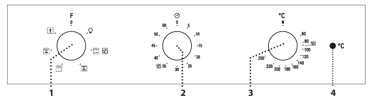
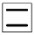
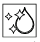
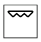
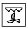
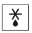

Istruzioni forno
Descrizione prodotto
Pannello di controllo
- 1. Manopola di selezione
- 2. Manopola timer
- 3. Manopola termostato
- 4. LED termostato / preriscaldamento

Funzioni del forno
- Off: per spegnere il forno.
- Luce: per accendere la luce di cavità.
- Statico: per cuocere qualsiasi tipo di pietanza su un solo ripiano. E’ preferibile utilizzare il 2° livello.

- Diamond Clean: l'azione del vapore rilasciato durante questo speciale ciclo di pulizia a bassa temperatura permette di rimuovere facilmente sporco e residui di cibo.

- Ventilato: per cuocere torte con ripieno liquido su singolo ripiano. Questa funzione può essere utilizzata anche per cotture su due ripiani.
- Grill: per grigliare costate, spiedini e salsicce, gratinare verdure o dorare il pane.

- Turbo Grill: per arrostire grossi pezzi di carne (cosciotti, roast beef, polli).

- Scongelamento: per velocizzare lo scongelamento degli alimenti.

Uso quotidiano
- Selezionare una funzione: ruotare la manopola di selezione in corrispondenza del simbolo della funzione desiderata.
- Avviare una funzione manuale: ruotare la manopola termostato per impostare la temperatura desiderata.
- Preriscaldamento: il led termostato acceso segnala che si è attivata la fase di preriscaldamento.
- Impostare il timer: ruotare la manopola del timer completamente in senso orario e poi riportarla alla durata desiderata, procedendo in senso antiorario.
Tabella di cottura
- Torte a lievitazione: 150 - 170°C per 30 - 90 minuti al livello 2.
- Torte ripiene: 160 - 200°C per 35 - 90 minuti al livello 2.
- Biscotti/Tortine: 160 - 180°C per 15 - 35 minuti al livello 2 o 3.
- Pizza / Focaccia: 220 - 250°C per 10 - 25 minuti al livello 1 o 2.
- Lasagna / Pasta al forno: 190 - 200°C per 45 - 65 minuti al livello 2.
- Arrosto di maiale con cotenna: 180 - 190°C per 110 - 150 minuti al livello 2.
Cura e pulizia
- Pulire le superfici esterne con un panno in microfibra umido.
- Pulire le superfici interne dopo ogni uso, lasciando raffreddare il forno.
- Attivare la funzione “Diamond Clean” per una pulizia ottimale delle superfici interne.
- Mettere a bagno gli accessori con detersivo per piatti dopo l’uso.
Consigli utili
- Utilizzare la funzione “Ventilato” per cuocere contemporaneamente cibi diversi su ripiani diversi.
- Utilizzare accessori in metallo scuro o pentole e accessori in pyrex o ceramica per tempi di cottura più lunghi.